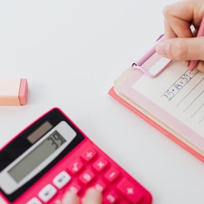

Calcular el peso ideal
El peso ideal se puede calcular mediante la fórmula del IMC y sus resultados pueden servir para orientarnos sobre nuestra salud
El peso ideal se puede calcular mediante la fórmula del IMC y sus resultados pueden servir para orientarnos sobre nuestra salud
Esta calculadora te ayudará a que sepas en todo momento cuantas calorías necesitas en función de tus objetivos
Caminar es una buena opción para perder peso y mantenernos activos y saludables, averigua cuantas calorías oxidas andando
Ligero y rápido, un desayuno o merienda ideal que se puede combinar con las frutas que más te gusten.
Ensalada con aderezos, tomáte, ternera, aceite de oliva y un poco de sal gorda, muy bueno y bajo en calorías
Las reinas de las mañanas, un buen desayuno con unas tortitas hechas de harina de avena y sirope zero calorías

La pérdida de grasa es un proceso que depende de varios fundamentos del cuerpo. Existen cuatro factores, que no implican dietas o rutinas. Cualquier transformación que queramos para nuestro cuerpo, requiere que conozcamos cómo funciona ante determinadas acciones. Sin embargo, es esencial contar con el apoyo de un especialista. No solo para concretar un plan de entrenamiento correcto; también, para elaborar una planificación nutricional acorde.

¿Has empezado una nueva actividad de fitness y te preguntas después de cuántas semanas podrás obtener resultados? ¿Estás preparado para la operación bikini, pero tienes miedo de que te cueste demasiado tiempo? ¿Sueñas con dominar una disciplina, pero todavía estás en el nivel de principiante y el camino parece todo cuesta arriba y no sabes cuándo empezarás a obtener resultados? No hay tiempo exacto a partir del cual los resultados del entrenamiento empiecen a notarse.

Es probable que, cuando hayas empezado a entrenar, hayas ido notando progresos rápidamente. Si era tu primera incursión en el mundo del deporte, esta sería la situación más natural. Sin embargo, a medida que vas adaptando tu organismo y músculos, estos también responden. La manera de hacerlo es produciendo una mayor resistencia, adaptando tu metabolismo a los cambios. Hay que entender que tu cuerpo va a tratar de mantener en todo momento el mismo peso.